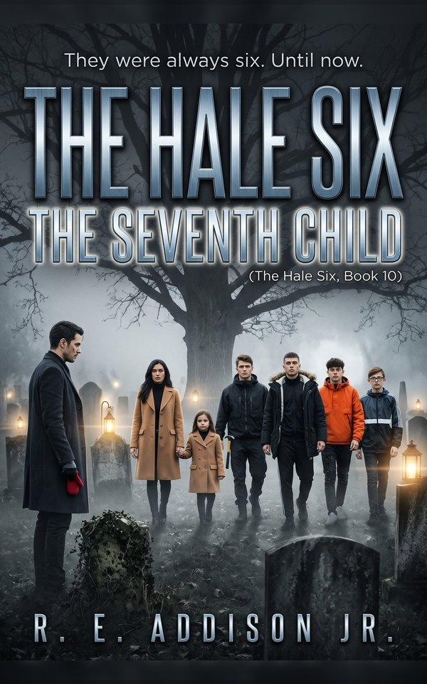

Save to PinterestPre-order · Available December 21, 2027
The Seventh Child
Family espionage thriller · The Hale Six, Book 10
eBook $9.99
They were always six. Until now.
Every year on the twenty-eighth of March, Daniel Hale drives to Green Lawn Cemetery alone, parks outside the fence in the dark, and sits with a child's red mitten in his pocket. For twenty-seven years he has told his children "not yet." This year a man in a long dark coat, with a scar along his jaw, walks up the hill with a lantern, lays the other mitten on a small overgrown grave, then crosses the road, knocks on the car window, and says: "Hello, Father."
His name is Adrian. He was the first child the Hales ever had, adopted in Vienna in 2002 and buried in Columbus in 2003, in a coffin that was empty. He was raised by their grandfather's people in a house on the Danube to be Halcyon's heir, and then cut out of the will. Now he says the woman who raised him means to kill all six of them, and he has come to warn them.
From the cemeteries of Vienna to a flooded Danube and the cellars beneath a medieval town at midsummer, the Hale Six must decide whether the stranger at their table is a brother, a weapon, or both, and whether ten chairs were always meant for more than six.
ALL SIX. OR NOTHING.
The Seventh Child is Book 10 of The Hale Six, a family thriller series by R. E. Addison Jr.